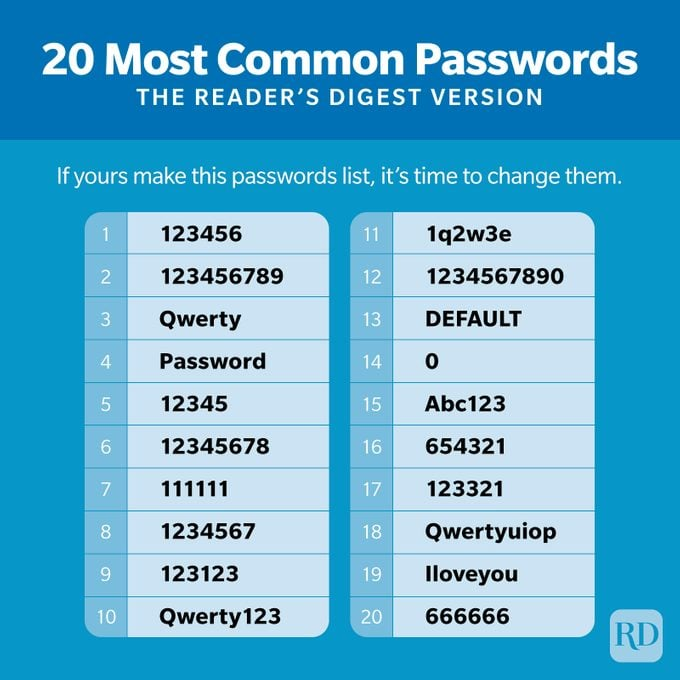

Maybe you can’t think of a secure password you can remember. That’s okay! Here are some tips below. However, when taking these suggestions, remember to add numbers and special characters. Or, you can use our
Password Generator to generate a new password.

1. Favorite songs
You could use your favorite song or a line from your favorite song you could remember. For example, "
Never Gonna Give You Up" is a secure password. is a secure password. You could also use your favorite food, book, movie, celebrity, author, company, item, etc. for your password.
2. A place you have been to
You could also use a place you have been to. Then, attach the month and year that you went to. Or, you can add exclamation marks or any other special characters. For example,"
YosemiteJuly2022" is a secure password.
3. Ads or slogans
Another method you could use is a line of an ad or a slogan that you can remember easily or that is stuck in your
head. For example, the password "
1-877Kars4Kids" is secure.
4. Historic event
If you're good with dates, you could use a historical event. For example, "
AmericanRevolution1775" is a secure password.
5. Random words
If your password just contains random words, it’ll take a long time to crack. “
California1Taco2Bell3Burritos!” is very secure. This password uses numbers between words and a special character at the end. You can do something similar too. You can also develop a way to remember your string of random words, like “In California, I go to Taco Bell to buy burritos.”
6. Catchphrase
You can also use a catchphrase or something you say often as your password. “
Shoes are tasty!” is a secure password (given that you say it a lot). However, note that ill-intentioned friends may try to hack you.
7. Shift on the keyboard when typing
You can just have a sentence or phrase, but when you type it, you shift left, up, or down. Going back to our last example, “
Djord str ysdtyz!”, or “
Shoes are tasty!” is a secure password.
8. Make an acronym
Another method is to make an acronym you would use, like “
IoaBMW,wa5782p” ("I own a BMW, with a 5782 plate").
9. Repeating it
If you already have a favorite password you can easily remember, you can repeat it. For example, if my favorite password is “
Shoes are tasty!” I can repeat it twice. My new password, “
Shoes are tasty! Shoes are tasty!”, is very secure on our Password Security Checker.
10. Make your own system
You could always make your own system. For example, you could have a phrase, but instead of spaces, use special characters. Get your creative juices flowing!
But remember, in the end, check with our Password Security Checker to see if it is secure.
[Usually, using real dictionary words in passwords is no good. Hackers can easily check through dictionaries to try to crack your password. However, if your password is long enough, it would still be considered secure. This type of password would be considered a passphrase. Passphrases usually consist of long strings of understandable words. However, if you are making a password which only contains 10 characters, try to opt for less dictionary words. As always, symbols, numbers, and capital letters are important for both of these.]
But remember, in the end, you have to check with our
Password Security Checker to see if it is secure!